Konsep Dasar SAST & DAST
SAST (Static Application Security Testing) adalah metode pengujian keamanan yang dilakukan
tanpa menjalankan aplikasi. Pengujian fokus pada kode sumber, bytecode, atau binary untuk mencari kerentanan
seperti SQL Injection, buffer overflow, hardcoded secrets, dan kesalahan logika.
Karakteristik:
- Dilakukan sebelum aplikasi berjalan
- Bersifat white-box testing
- Mendeteksi bug lebih awal (shift-left security)
- Tools umum: SonarQube, Bandit, Checkmarx
DAST (Dynamic Application Security Testing) adalah metode pengujian yang
dilakukan pada aplikasi yang sedang berjalan untuk melihat bagaimana sistem merespons
input dan serangan dari luar.
Karakteristik:
- Dilakukan saat aplikasi aktif
- Bersifat black-box testing
- Mendeteksi celah runtime seperti XSS, SQL Injection, CSRF
- Tools umum: OWASP ZAP, Burp Suite, Nikto
Mengapa SAST & DAST Penting
Penerapan kedua metode ini mendukung prinsip DevSecOps:
- Shift-left security — menemukan bug lebih awal.
- Continuous security — pengujian otomatis setiap commit.
- Security gate — build pipeline bisa dihentikan saat ada vulnerability kritis.
- Meningkatkan kualitas kode dan keamanan secara keseluruhan.
Pipeline DevSecOps dengan SAST & DAST
Pipeline umum:
- Developer melakukan commit kode
- Unit test berjalan
- SAST dengan SonarQube
- Build dan deploy ke staging
- DAST menggunakan OWASP ZAP
- Deployment ke production setelah lulus security gate
Pendekatan ini memastikan aplikasi diuji secara menyeluruh — baik dari sisi kode maupun sisi perilaku aplikasi.
Menjalankan SAST Menggunakan SonarQube
Berikut langkah-langkah menjalankan analisis statis menggunakan SonarQube.
1. Menjalankan SonarQube via Docker

Akses melalui browser: http://localhost:9000
Login default: admin / admin


Ambil token : My Account > Security > Generate Token

2. Install Sonar Scanner (Windows)
1. Download Sonar Scanner
- Buka website resmi: https://docs.sonarsource.com/sonarqube/latest/analyzing-source-code/scanners/sonarscanner/
- Cari bagian SonarScanner for Windows
- Download file ZIP: sonar-scanner-cli-7.3.0.5189-windows-x64.zip

2. Extract ZIP
- Setelah di-download, klik kanan → Extract All
- Pindahkan folder hasil extract ke lokasi permanen, misalnya:
- Di dalamnya akan ada folder seperti:

3. Tambahkan ke PATH Windows
Agar bisa menjalankan sonar-scanner di Command Prompt / PowerShell.
Langkah-langkah:
- Tekan Start → ketik Edit the system environment variables
- Klik Environment Variables
- Pada “System variables”, cari Path → klik Edit

- Klik New
- Masukkan path:

- Klik OK sampai selesai
4. Cek instalasi
Buka Command Prompt atau PowerShell, kemudian jalankan:
Jika berhasil, akan muncul informasi versi.

5. Konfigurasi file sonar-project.properties
Di dalam folder project kamu, buat file:
Isinya contoh:
6. Jalankan scan
Dari CMD/PowerShell di folder project:

Sonar Scanner akan mengirimkan analisis ke SonarQube di http://localhost:9000.

Menjalankan DAST Menggunakan OWASP ZAP
OWASP ZAP digunakan untuk menguji kerentanan runtime.
- Buka Command Prompt (CMD) lalu masuk ke direktori proyek:
- Jalankan OWASP ZAP Baseline Scan menggunakan perintah berikut:
- Hasil Scan:
Setelah proses selesai, buka laporan hasil pemindaian pada:
C:\xampp\htdocs\antrian\zap_report.html

| High |
Medium |
Low |
Informational |
|
• Content Security Policy (CSP) Header Not Set
• Missing Anti-clickjacking Header
• Source Code Disclosure - SQL
• Sub Resource Integrity Attribute Missing
|
• Big Redirect Detected (Potential Sensitive Information Leak)
• Cookie No HttpOnly Flag
• Cookie without SameSite Attribute
• Cross-Domain JavaScript Source File Inclusion
• In Page Banner Information Leak
• Insufficient Site Isolation Against Spectre Vulnerability
• Permissions Policy Header Not Set
• Server Leaks Information via "X-Powered-By" Header
• Server Leaks Version Information via "Server" Header
• Timestamp Disclosure - Unix
• X-Content-Type-Options Header Missing
|
• Authentication Request Identified
• Information Disclosure - Suspicious Comments
• Modern Web Application
• Non-Storable Content
• Session Management Response Identified
• Storable and Cacheable Content
• User Controllable HTML Element Attribute (Potential XSS)
|
Integrasi CI/CD
Kedua tools dapat diintegrasikan ke dalam GitHub Actions atau Jenkins
untuk mengotomatisasi proses SAST dan DAST. Pipeline ini membuat setiap commit diuji
keamanannya secara otomatis.
1. Membuat Repository GitHub (Langkah Awal)
Buat repository baru
- Masuk ke GitHub: https://github.com
- Klik tombol New repository
- Isi:
- Repository name: devsecops-week5
- Description: Repository untuk tugas DevSecOps — SAST & DAST
- Visibility: Public
Repo kamu sekarang siap digunakan.
Push kode aplikasi ke GitHub
Jalankan di Git Bash / CMD:
Setelah push, seluruh kode aplikasi akan muncul di repository GitHub.
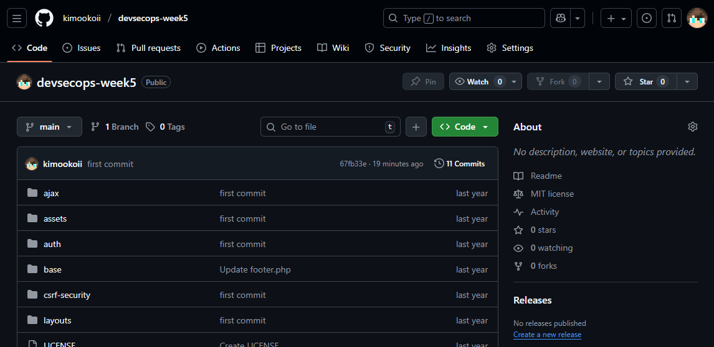
2. Menambahkan Konfigurasi SAST (SonarQube)
SonarQube membutuhkan sebuah file konfigurasi bernama:
File ini harus ditaruh di root repository.
Commit dan push:
3. Menambahkan Dockerfile (Wajib Agar Bisa DAST)
OWASP ZAP membutuhkan aplikasi berjalan dalam CI/CD. Karena GitHub Actions menjalankan pipeline di server Ubuntu, aplikasi harus dapat dijalankan di dalam container Docker.
Buat file:
Isi:
Commit dan push:
4. Membuat Folder Pipeline GitHub Actions
Buat folder:
Di dalamnya buat file:
5. Workflow CI/CD SAST + DAST
Berikut workflow lengkap untuk:
- SonarQube SAST
- Build & Run aplikasi dalam Docker
- Jalankan ZAP Baseline Scan (DAST)
- Upload laporan
- Optional: fail pipeline jika High Risk ditemukan
File yang telah dibuat:
Isi:
6. Menambahkan Secrets di GitHub
Masuk ke:
GitHub → Repository → Settings → Secrets → Actions
Tambahkan:
| Secret Name |
Value |
SONAR_HOST_URL
SONAR_TOKEN
|
http://IP_SONARQUBE:9000
Token dari SonarQube
|
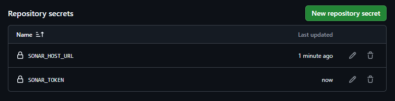
7. Menjalankan Pipeline
Setelah semua file dipush, pipeline akan otomatis berjalan setiap:
✔ Push ke branch main
✔ Pull request ke main
Masuk ke:
GitHub → Actions → CI - SAST & DAST
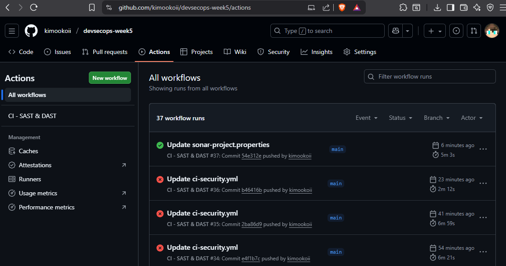
Di bagian output akan terlihat:
Temuan dan Mitigasi : SonarQube

1. Add password protection to this database
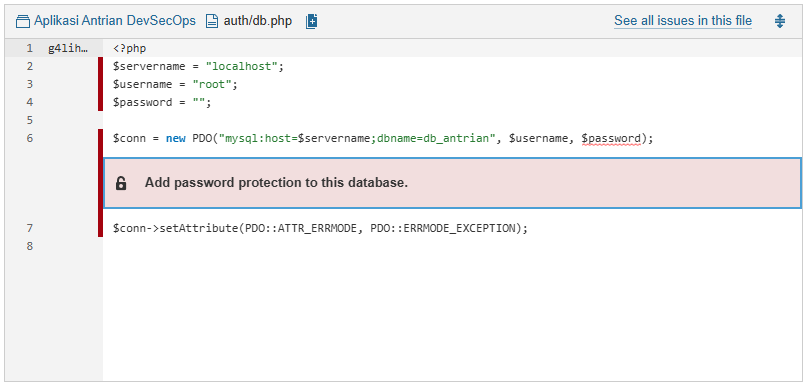
Ini bukan bug 100% (Sonar tidak bilang “vulnerability”), tetapi peringatan bahwa koneksi database kamu menggunakan username = root dan password kosong, yang tidak aman untuk environment apa pun (bahkan untuk development).
Kenapa Sonar memberi peringatan ini?
Karena baris:
Dan ini:
- Tidak ada password: akses database terbuka.
- Menggunakan root: role paling tinggi (akses penuh ke mysql).
- Ditulis langsung di file: credential hardcoded → praktik tidak aman.
Sonar menganggap ini high-risk hotspot, karena jika code ini digunakan dalam deployment, database kamu bisa diambil alih.
Perbaikan yang benar
Buat user baru MySQL:
Lalu update file auth/db.php:
2. Remove the parentheses from this echo call
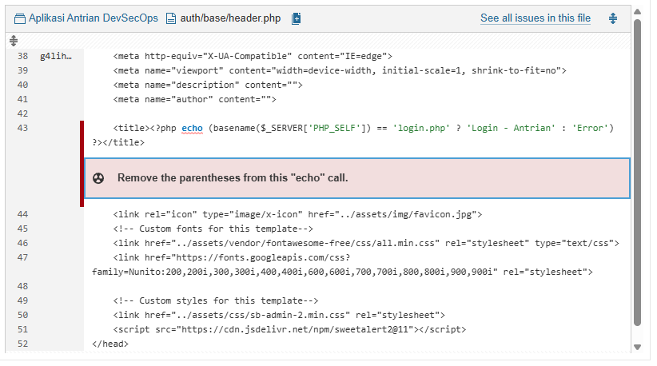
Kenapa Sonar memberi peringatan ini?
SonarQube menganggap bahwa tanda kurung ( ... ) setelah echo tidak diperlukan dan membuat kode “kurang clean”.
Ini bukan bug dan bukan celah keamanan — hanya Code Smell / gaya penulisan.
Perbaikan yang benar
Cukup hapus tanda kurung luar, karena echo tidak membutuhkan ekspresi di dalam ().
Output-nya tetap sama.
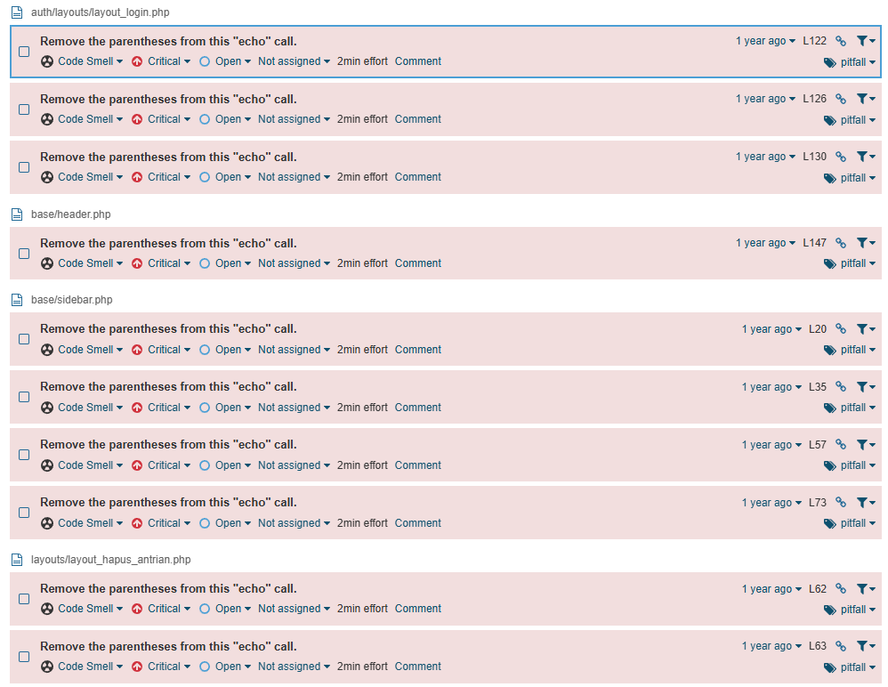
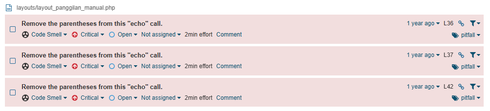
Untuk masalah "Remove the parentheses from this echo call." yang lain. Perbaikan tetap sama, cukup hapus tanda kurung luar. Karena echo tidak membutuhkan ekspresi di dalam ().
3. include_once
Ini BUKAN bug atau vuln. Ini hanya "Code Smell" bersifat rekomendasi, dan dalam project PHP procedural seperti punyamu, warning ini boleh diabaikan.
Kenapa Sonar memberi peringatan ini?
Sonar menunjukkan:
Replace "include_once" with namespace import mechanism through the "use" keyword.
Ini rule milik Sonar untuk PHP berbasis OOP + namespace modern (PSR-4). Rule ini menganggap kamu memanggil file PHP seolah-olah kamu memanggil class/function di namespace, padahal bentuk kode kamu adalah:
Dalam project lama / procedural PHP, ini normal.
Sonar tidak secara otomatis tahu struktur aplikasi kamu — jadi dia memberikan false positive recommendation.
Perbaikan yang benar (jika ingin menghilangkan warning)
Tambahkan komentar Sonar untuk menandai rule ini sebagai “won’t fix”.
Tambahkan di atas baris include:
SonarQube otomatis mengabaikan baris tersebut.
Ini adalah BEST PRACTICE saat rule tidak applicable.
Temuan dan Mitigasi : OWASP ZAP
1. Content Security Policy (CSP) Header Not Set
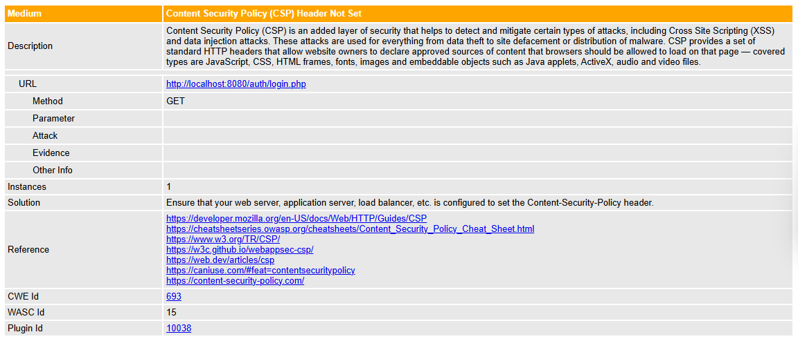
Kenapa terjadi?
ZAP menandai temuan “Content Security Policy (CSP) Header Not Set” karena halaman web tidak mengirimkan header Content-Security-Policy.
Tanpa CSP, browser tidak tahu sumber konten mana yang boleh dijalankan, sehingga aplikasi menjadi lebih rentan terhadap:
- Cross-Site Scripting (XSS)
- Data injection / malicious scripts
- Loading script atau resource dari domain berbahaya
CSP adalah lapisan keamanan tambahan yang membatasi JavaScript, CSS, gambar, font, iframe, dan resource lain agar hanya berasal dari sumber yang dipercaya.
Cara Mengatasinya
Tambahkan header CSP pada web server atau aplikasi. Format paling sederhana:
Apache / .htaccess
PHP (per halaman)
2. Insufficient Site Isolation Against Spectre
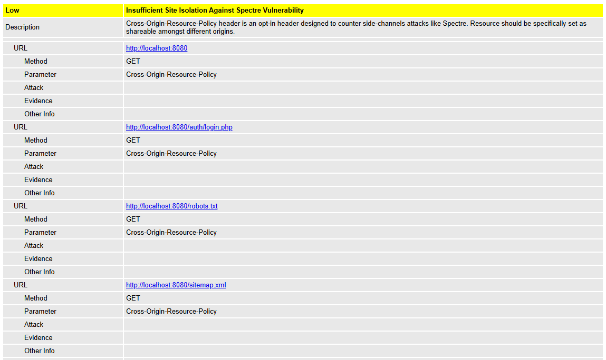
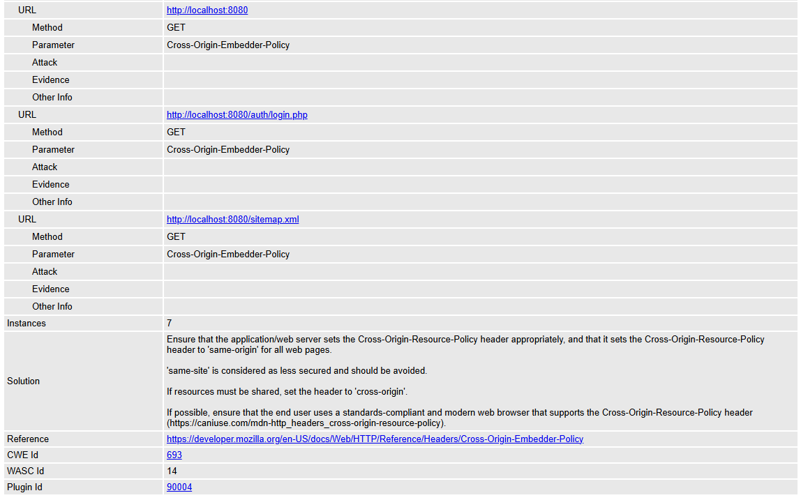
Kenapa terjadi?
ZAP memberikan temuan "Insufficient Site Isolation Against Spectre" karena halaman web tidak mengirimkan header keamanan modern seperti:
- Cross-Origin-Resource-Policy (CORP)
- Cross-Origin-Embedder-Policy (COEP)
Header-header ini dirancang untuk melindungi browser dari side-channel attacks, terutama Spectre, yang memungkinkan website jahat membaca informasi sensitif dari website lain melalui mekanisme spekulatif CPU.
Tanpa header ini, browser tidak dapat sepenuhnya mengisolasi sumber daya (resource isolation), sehingga risiko kebocoran data antar-origin menjadi lebih tinggi.
Cara Mengatasinya
Tambahkan header berikut pada web server atau aplikasi:
Header Wajib (nilai paling aman)
Cross-Origin-Resource-Policy (CORP)
Cross-Origin-Embedder-Policy (COEP)
Contoh implementasi lengkap (Apache / .htaccess)
Menggunakan PHP (per halaman)
3. Server Leaks Version Information via "Server" HTTP Response Header
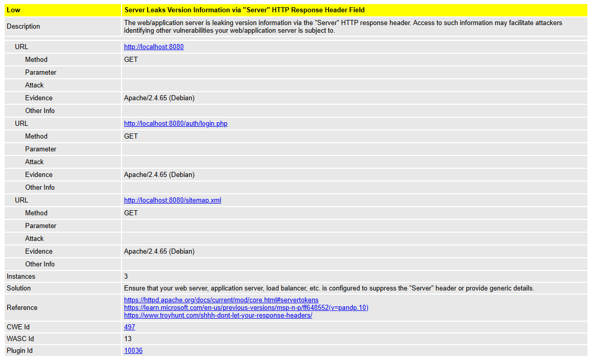
Kenapa terjadi?
ZAP menemukan bahwa server web mengirimkan header:
Informasi ini dianggap sensitif karena:
- Mengungkap jenis server (Apache / Nginx / IIS)
- Mengungkap versi dan OS (Debian)
- Membantu penyerang menargetkan eksploit yang cocok dengan versi tersebut
Singkatnya: fingerprinting → memudahkan attacker mengetahui kelemahan dan exploit apa yang kemungkinan bekerja.
Tidak mematikan, tapi low-risk hardening issue yang wajib diperbaiki untuk mengurangi attack surface.
Cara Mengatasinya
Apache (httpd / Debian / Docker php:apache)
Tambahkan ini ke config Apache:
Atau di .htaccess (jika diizinkan):
Jika pakai container Docker berdasarkan apache
Tambahkan ke Dockerfile:
PHP (hilangkan X-Powered-By)
Di php.ini atau file config:
Kesimpulan
SAST dan DAST adalah dua pendekatan penting untuk menjaga keamanan aplikasi dalam DevSecOps.
SAST membantu mendeteksi kerentanan pada tahap awal, sedangkan DAST memastikan aplikasi aman
saat dijalankan. Integrasi keduanya ke pipeline otomatis membuat proses pengembangan lebih aman,
cepat, dan efisien.